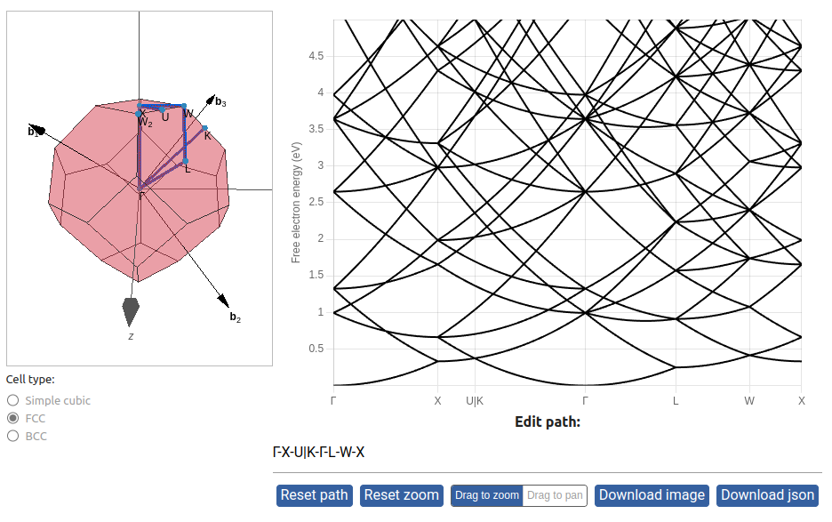
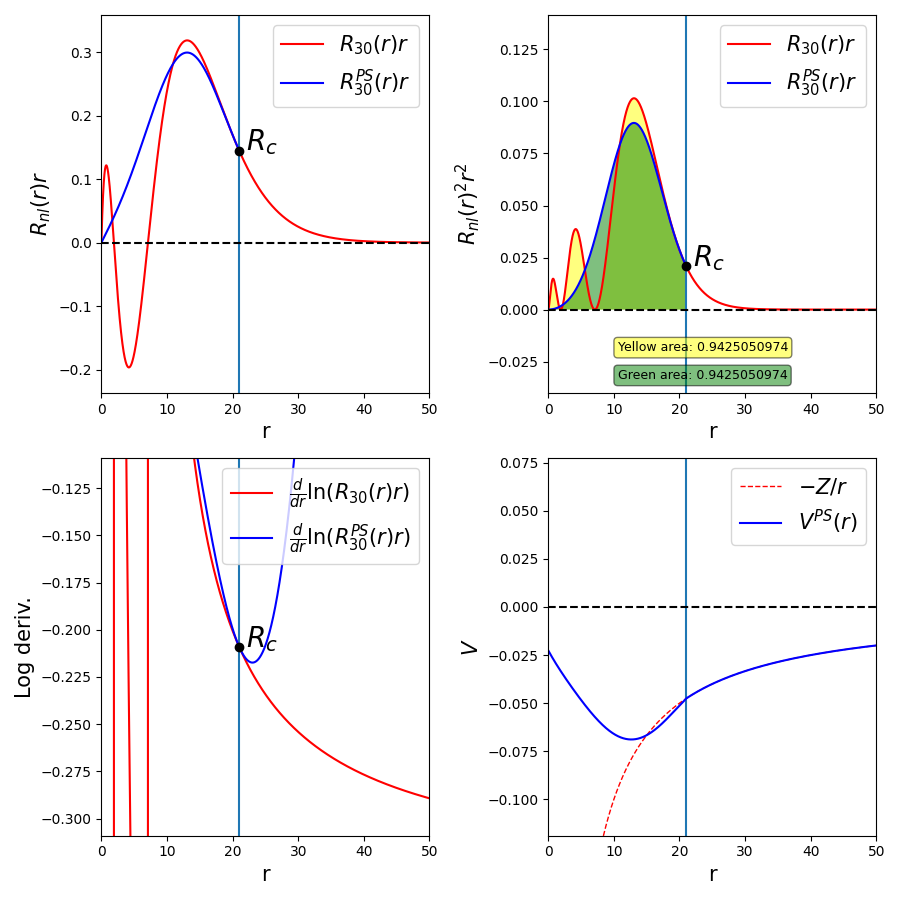

Band Theory of Crystals¶
1. Fourier Transforms and Plane-Wave Expansions¶


This notebook shows interactively how discrete Fourier series can represent a function with a limited number of plane-wave components. This notebook focuses on a simple example (much simpler than a complete DFT calculation) in order to help the reader focus on the essential aspects of such a representation.

2. Free-electron Bands in a Periodic Lattice¶


The main goal of this notebook is to demonstrate the band structures and density of states of the free-electron model in a periodic lattice.
{kind=link}
3. Density of states (DOS)¶


This notebook demonstrates various approaches for the numerical calculation of the density of states (DOS) for a 3D free-electron model in periodic boundary conditions.

4. Norm-conserving Pseudopotentials¶


The pseudopotential method is a technique used to construct an effective ionic potential that includes both the effects of the nucleus and of the core electrons, allowing one to consider explicitly only the valence electrons. This notebook demonstrates a method to construct norm-conserving pseudopotentials and displays them interactively, together with the resulting pseudowavefunctions.
{kind=link}